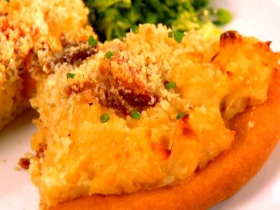
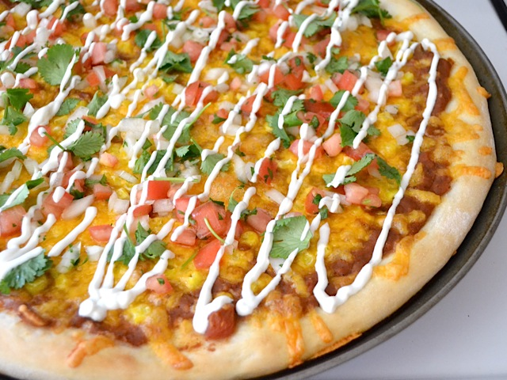
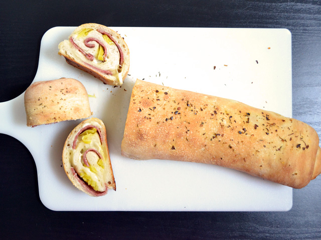
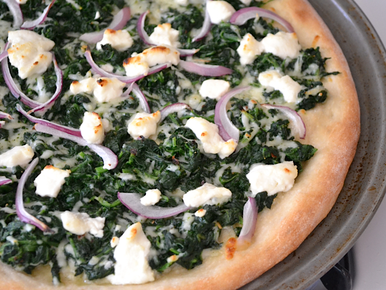
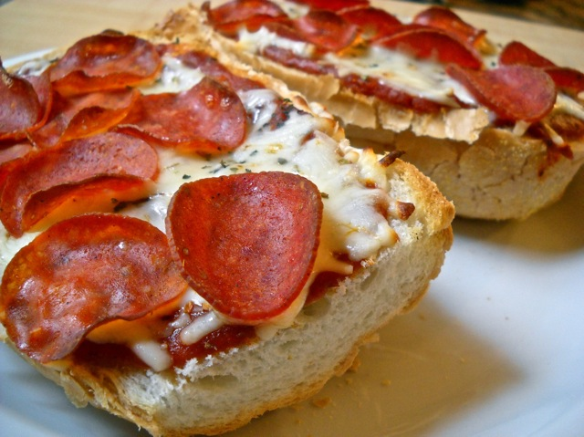
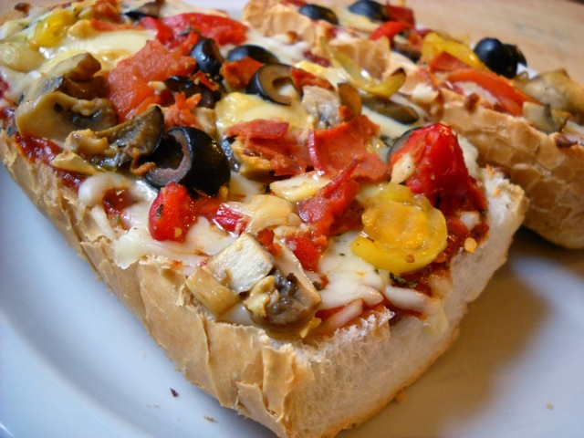
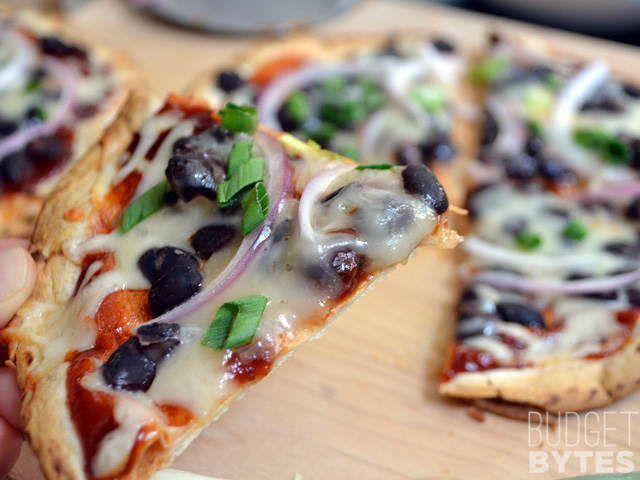

Anthony Hernandez
Software Engineer


These are your options! :)
Click the photos to see the recipe and possibly more pictures (depending on the website). I chose the best pictures for you already.

Macaroni and Cheese

Taco Pizza

Stromboli

Spinach and Goat Cheese

French Bread (Two pictures because it's supposed to be made both ways at the same time)

BBQ Black Bean (and Chicken, not in recipe)